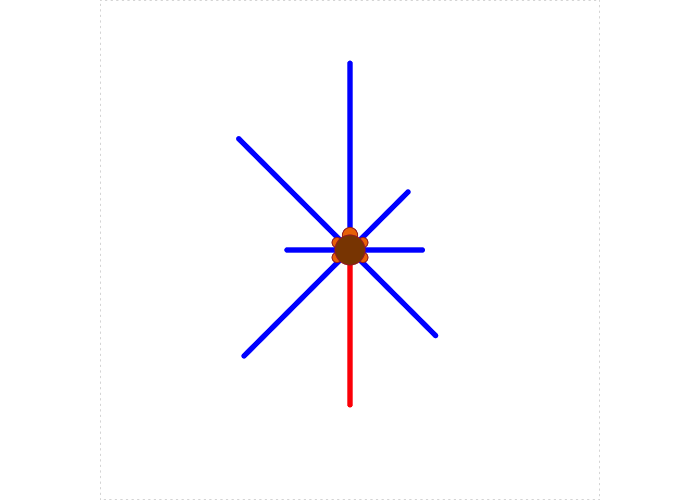
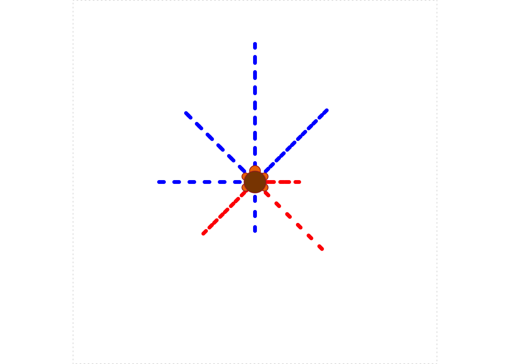

5.4 Random Moves
So far our turtle has moved in very regular and disciplined ways. It’s time to break the pattern, a bit. R has a quite a few functions to generate numbers that look “random”; we will use some of these functions to make the turtle move about randomly.
5.4.1 Sampling from a Vector
You have already met the sample() function (see Section 4.2.1). Let’s take a closer look at it.
sample() makes a random choice from a given vector. From the R-help we read that the general form of a call to sample is as follows:
sample(x, size, replace = FALSE, prob = NULL)In the above call:
xis the vector from which we wish to sample (R refers to it as the “population”);sizeis the number of random samples we want;replacesays whether or not to replace each member of the population after we have sampled it.probspecifies the desired probability for each member of the population to be chosen.
A few examples will help us understand how the arguments work:
vec <- 1:10 # we'll sample from this vector
sample(vec, 1)## [1] 7We got only one number because we set size to 1. Every element in vec had an equal chance of being the element selected. This time we got 7, but if you were to run the function again for yourself your results would probably be different.
Let’s sample 10 numbers from vec:
sample(vec, 10)## [1] 3 5 2 4 7 6 9 1 8 10Because replace was left at its default value of FALSE, R did not replace numbers after pulling them from the vec. After each sample, the remaining numbers all had the same chance to be picked next. Setting size to the length of x and keeping replace = FALSE therefore has the effect of randomly shuffling the elements of x.
Of course when replace = FALSE any attempt to sample more than the number of elements of vec will result in an error:
sample(vec, 11)Error in sample.int(length(x), size, replace, prob) :
cannot take a sample larger than the
population when 'replace = FALSE'When we set replace = TRUE then each selected element is returned to the population. At any stage, the chance for a given member of the population to be the one selected next is the same—no matter how many times that member has already been selected. Thus, when replace = TRUE you are liable to see repeats:
sample(vec, 20, replace = TRUE)## [1] 3 8 8 8 8 9 5 6 7 1 4 8 4 1 10 6 3 3 1 9When the prob parameter is left at its NULL value, R gives each member of the population the same chance to be the member that is selected. It is possible to adjust the probabilities of selection by setting prob to a vector of probabilities (one for each corresponding member of x). Thus, suppose we want to select 20 numbers from vec, according to the following the probabilities:
- 5% chance of selection, for each number from 1 to 8;
- 30% chance for 9 to be selected;
- 30% chance for 10 to be selected.
Then we can call sample() like this:
sample(vec, 20, replace = TRUE,
prob = c(rep(0.05, 8), 0.30, 0.30))## [1] 9 1 9 10 9 6 8 9 4 7 10 10 9 2 6 9 5 9 10 10Notice the majority of 9’s and 10’s: this was fairly likely to occur since each selection had a 60% chance of turning out to be 9 or 10.
5.4.2 Application: a Bouncing Turtle
Let’s apply sample() to design a scenario in which the turtle moves a fixed amount at each step, but the direction—north, east, south, or west—is completely random. When the turtle reaches the boundary of its domain, however, we would like it to “bounce back”: i.e., take a step in the direction opposite to the step that brought it to the boundary. We will also query the user prior to each step, asking if he/she wants to see another move. This not only allows the user to decide when to end the scenario; it also permits the user to see where the turtle is after each step.
One possible implementation is as follows:
turtle_bounce <- function(side = 60, step= 10) {
if ( (side/2) %% step != 0 ) {
stop("Side-length divided by two must be a multiple of step.")
}
bounds <- c(0, side)
turtle_init(side, side, mode = "clip")
origin <- turtle_getpos()
cp <- turtle_getpos()
repeat {
move <- readline(prompt = "Go Again? (enter q to quit): ")
if ( move == "q") break
x <- cp["x"]
y <- cp["y"]
if (x %in% bounds | y %in% bounds) {
angle <- 180
} else {
angle <- sample(c(0,90,180,270), 1)
}
turtle_right(angle)
turtle_forward(step)
cp <- round(turtle_getpos(), 0)
print(cp)
}
cat("All done!")
}Play the game a few times, to get a feel for how it works:
turtle_bounce(60, 15)Let’s examine the code a bit more closely.
The definition indicates that there are two parameters: side and step.
- The
sideparameter gives the dimensions of the Turtle’s field. Thus ifsidewere set to 60—which is the default—then the field would be a 60-by-60 square, with the origin \((0,0)\) in at lower-left corner and the point \((60, 60)\) at the upper-right corner. When the turtle is initialized it will appear in the middle of the square, at the point \((30, 30)\). stepspecifies how many units the turtle will move at each step. In this analysis we will assume thatstepis set to 15.
Inside the function, we begin with a bit of input-validation:
if ( (side/2) %% step != 0 ) {
stop("Side-length divided by two must be a multiple of step.")
}Remember that the turtle will start at \((\texttt{side}/2, \texttt{side}/2)\) and will move step each time. If \(\texttt{side}/2\) is not evenly divisible by step then the turtle would be able to go from inside its field to outside in a single step. We don’t want that to happen so we stop the user if the remainder after dividing \(\texttt{side}/2\) by side is anything other than zero.
If the input is OK, then we set up a vector bounds that records the smallest and largest possible values for the \(x\) and \(y\) coordinates of the turtle:
bounds <- c(0, side)Next, we initialize the turtle in the middle of the field and record its initial position in the vector cp:
turtle_init(side, side, mode = "clip")
origin <- turtle_getpos()
cp <- turtle_getpos()(You can think of cp as short for: “current position”.)
Next, we enter a repeat-loop. Inside the loop we begin with:
move <- readline(prompt = "Go Again? (enter q to quit): ")
if ( move == "q") break
x <- cp["x"]
y <- cp["y"]We first asked the user if she wanted to quit. If she enters “q” then we’ll break out of the loop and end the scenario. If she enters anything else (including just pressing Enter) then we record the \(x\) and \(y\) coordinates of the turtle’s current position in the vectors x and y respectively.
Our next task is to determine how the turtle should move:
if (x %in% bounds | y %in% bounds) {
angle <- 180
} else {
angle <- sample(c(0,90,180,270), 1)
}If the turtle is at a boundary (either x equal to 0 or 60 or y equal to 0 or 60) then we need to “bounce back”. This corresponds to making the turtle turn right by 180 degrees and then step. On the other hand if the turtle is not at a boundary then the direction of the turtle should be random, so we should have it turn right by either 0, 90, 180 or 270 degrees, with each possibility being equally likely. This is accomplished with the above call to the sample() function.
Having determined the amount by which to turn prior to the next step, we then have the turtle turn that amount and take the step:
turtle_right(angle)
turtle_forward(step)Finally, we set cp to the new position of the turtle, and print that position out to the console for the user to see:
cp <- round(turtle_getpos(), 0)
print(cp)Note that we rounded off the position to the nearest while number. This was done because the authors of the TurtleGraphics package use floating point arithmetic for their numerical operations, so sometimes the computed positions differ from whole numbers by a very tiny amount.
We then repeat the loop.
5.4.3 Uniform Random Numbers
sample() picks an element from a finite population. Sometimes, though, we want R to give the impression that it has picked a real number at random out of a range of real numbers. This can be accomplished with the runif() function.
A call to runif() looks like this:
runif(n, min = 0, max = 1)The idea is that R will produce n real numbers that have the appearance of having been drawn randomly from the interval of real numbers whose lower and upper bounds are specified respectively by min and max.
Thus, to get 10 “random” numbers that all lie between 0 and 1, you can leave min and max at their defaults and ask for:
runif(10)## [1] 0.646902839 0.394225758 0.618501814 0.476891136 0.136097186
## [6] 0.067384386 0.129152617 0.393117930 0.002582699 0.6202059545.4.4 Pseudo-Randomness and Setting a Seed
It’s important to point out that R doesn’t generate truly random numbers.15 After all, R simply runs a computer which operates according to a set of completely-specified steps. Thus the random data generated by R and by other computer languages is often called pseudorandom. Although the functions for random-number generation have been carefully designed so as to follow many of the statistical laws we associate with randomness in nature, all of the pseudo-random output is determined by an initial value and a deterministic number-generating algorithm.
We actually have the ability to set the pseudorandom data ourselves. This is called setting the random seed. From any specified seed, the result of calls to R’s random-data functions will be completely determined (although—just as in the case of “real” randomness—the output will still probably “look” random).
The set.seed() function will fix the random output. Try running the following two lines of code more than once:
set.seed(2025)
runif(10)## [1] 0.7326202 0.4757614 0.5142159 0.4984323 0.7802845 0.5042522 0.8984003
## [8] 0.1278527 0.6446721 0.5695311You will get the same output every time. If you change the argument of set.seed() to some other integer the output will probably change—but it will stay the same when you run the code again from that that new seed.
5.4.5 Application: a Drunken Turtle
We will now modify the previous scenario so that the turtle’s motion will be almost completely random. Even though it will take the same-size step every time, the angle at which it steps will be completely random: any real number of degrees from 0 to 360. We will also show the user the position of the turtle at each step, and use the “distance formula” from high-school geometry to compute and display the current distance of the turtle from the place where it started.
turtle_drunk <- function(side, step) {
turtle_init(side, side, mode = "clip")
# save (side/2, side/2), the turtle's initial position:
initial <- turtle_getpos()
repeat {
move <- readline(prompt = "Go Again? (enter q to quit): ")
if ( move == "q") break
# pick a random angle to turn by:
angle <- runif(1, min = 0, max = 360)
turtle_left(angle)
turtle_forward(step)
# get new position, make it the current position:
cp <- turtle_getpos()
# print to console:
print(cp)
# determine distnce from initial position (round to 3 decimals):
distance <- round(sqrt((cp[1] - initial[1])^2 + (cp[2] - initial[2])^2),3)
# prepare message to console,and print it:
message <- paste0("Distance from starting point is: ", distance)
cat(message)
}
cat("All done!")
}Try the game once or twice:
turtle_drunk(100, 5)It is natural to wonder how likely the turtle is to wander back close to where it started, and to wonder how often that will happen. We will address questions like these in Chapter 6.
5.4.6 Practice Exercises
Many of these exercises don’t deal directly with turtles, but instead drill you on the sample() and runif()` functions.
Write a call to the
sample()function so that it will pick a whole number at random from 1 to 10. Each number should have the same chance to be selected.You have a large bag of M&Ms. You reach in an grab a few. You have an equal to chance to grab any number of M&Ms from 1 to 10. (You can’t grab more than 10, and you can’t grab none.) Write a one-line command that expresses how many you grab.
Write a call to the
sample()function that will pick five numbers at random from the whole numbers from 1 to 10. On each pick, each of the ten numbers should have a 1-in-10 chance to be selected.Write a call to the
sample()function that will pick five numbers at random from the whole numbers from 1 to 10. It should not be possible to get the same number twice.Write a call to the
sample()function that scrambles the whole numbers from 1 to 10 in a random order.Write a call to the
sample()functions that randomly re-orders the lowercase letters of the English alphabet.The function
color()produces a character vector of the named colors that R is prepared to draw. Run it at the Console:colors()How many named colors are there? Let’s let R find out for us:
length(colors())## [1] 657Write a call to the
sample()function that will pick a single named color at random.Write a call to
runif()that will produce a single random real number between 0 and 1.Write a call to
runif()that will produce 20 random real numbers between 0 and 1.Write a call to
runif()that will produce 30 random real numbers, each of them between 10 and 15.You enter a forest where there are many sticks on the ground. Each of them is equally likely to be anywhere between 0 and 10 feet long. You pick up five sticks at random. Write a one-line R-command that produces the length of shortest stick that you pick up.
Write a function called
randomColor8()that produces an 8-ray star. Here are the specs:- The user should be able to determine the type of the line (think
turtle_lty()). - Each ray should have a 30% chance of being red and a 70% chance of being blue.
- In addition, the length of each ray should be a random real number between 10 and 40.
- The function should take a single parameter called
typethat the user can set to determine the line-type for the rays; its default-value should be 1. - The width of each ray should be 5.
Typical examples of use should be as follows:
randomColor8()
randomColor8(type = 3)
- The user should be able to determine the type of the line (think
5.4.7 Solutions to the Practice Exercises
sample(1:10, size = 1)The previous function call will do:
sample(1:10, size = 1).sample(1:10, size = 5, replace = TRUE)sample(1:10, size = 5, replace = FALSE)sample(1:10, size = 10, replace = FALSE)sample(letters, size = length(letters), replace = FALSE)sample(colors(), size = 1)runif()runif(20)runif(30, min = 10, max = 15)min(runif(5, min = 0, max = 10))Try this:
randomColor8 <- function(type = 1) { allowedColors <- c("red", "blue") turtle_init(mode = "clip") turtle_lty(lty = type) turtle_lwd(lwd = 5) turtle_do({ for ( i in 1:8 ) { turtle_col(col = sample(allowedColors, size = 1, prob = c(0.3, 0.7))) rayLength <- runif(1, min = 10, max = 40) turtle_forward(rayLength) turtle_backward(rayLength) turtle_left(45) } }) }
Indeed, philosophers of mathematics debate what randomness “really” is.↩